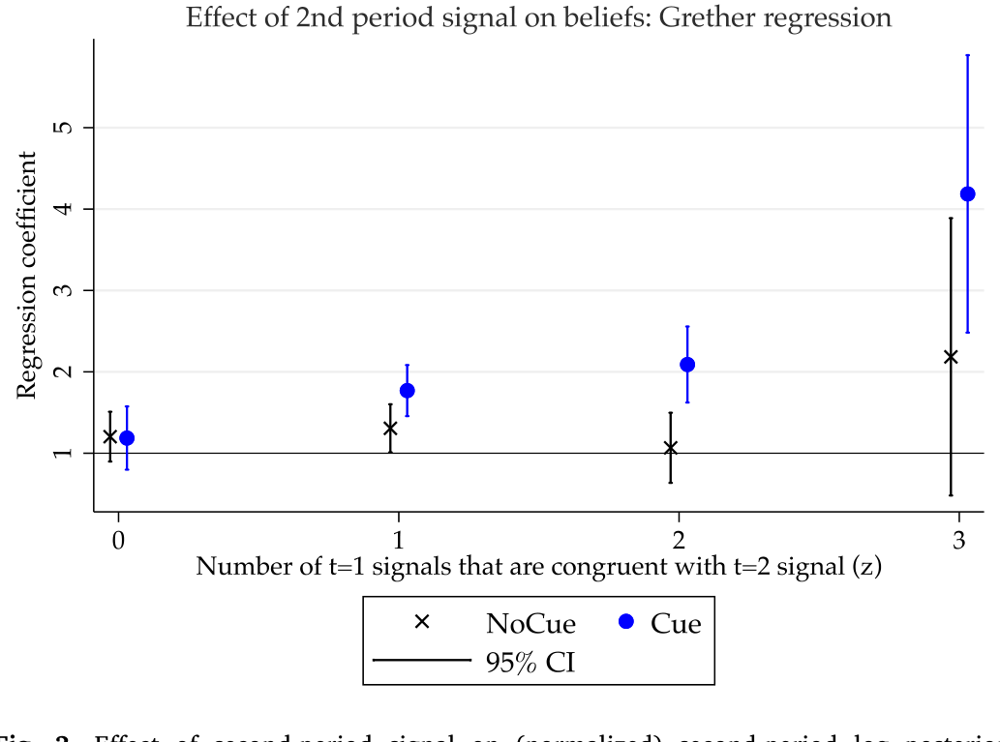
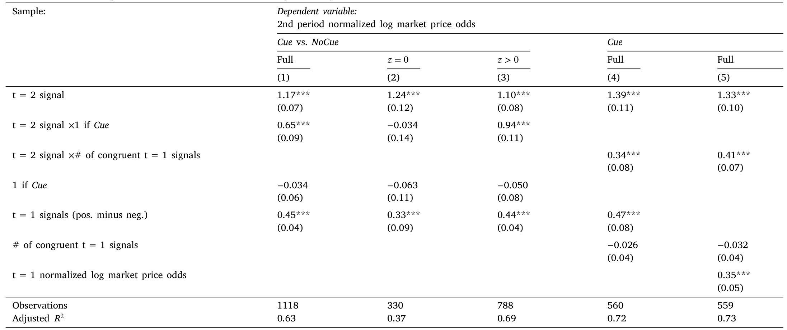
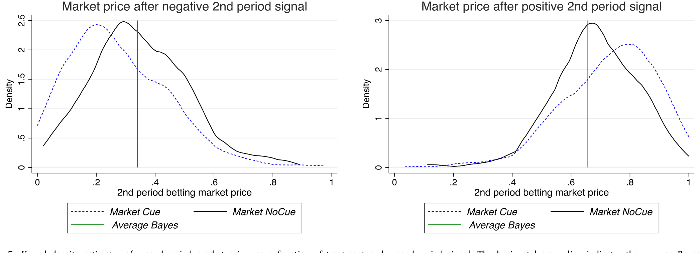
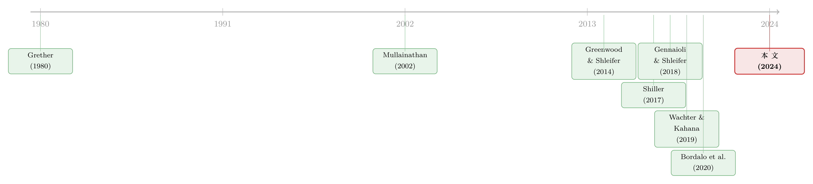

好消息让你想起好消息：把「过度反应」拆回记忆的联想
本文读的是 Enke, Schwerter & Zimmermann (2024, JFE)：他们用一组精心设计的实验室实验证明，联想式记忆 (associative memory) 会让人的信念对新消息系统性地「过度反应」——因为今天的好消息会不成比例地勾起你对过去好消息的回忆；更关键的是，即便在一个允许自由「不下注」的赌注市场里，这种偏差也没有被自我选择过滤掉，反而原封不动地写进了市场价格，让成交价变得「太极端」。
1 一个老问题，和一个没被回答的「为什么」
行为金融这些年攒下了一条几乎没人再争的事实：投资者的预期常常过度反应 (overreaction)。问卷里的预期收益率追着过去的行情跑（Greenwood and Shleifer, 2014），宏观和金融变量的预测误差里也一次次出现「涨过头、跌过头」的痕迹（Bordalo et al., 2020a）。这一点，本博客也反复讲过——无论是《当真金白银上场，人反而更「上头」了》，还是《三个臭皮匠，反而没那么容易上头？》，讲的都是这件事的不同侧面。
但有一个问题，一直悬在那里没被干净地回答：人为什么会过度反应？
过度反应只是一个「现象」。它背后的心理引擎是什么？近些年，一批理论家和叙事经济学的拥趸把矛头指向了一个看似平平无奇、却被心理学反复验证的机制——记忆。Shiller (2017) 的「叙事经济学」、Gennaioli and Shleifer (2018) 关于 2008 危机的《信念的危机》，都在反复暗示同一件事：金融信息从来不是赤裸裸地抵达我们的大脑的，它总被裹在故事、图像、口号里。而记忆，恰恰是联想式的——你更容易想起那些和当下相似的往事。
于是一个大胆的猜想浮出水面：如果记忆是联想式的，那么一条新消息除了「直接」更新你的信念，还会间接地、像一个线索 (cue) 一样，把过去那些「长得像它」的旧消息从记忆里勾出来。好消息勾起好消息，坏消息勾起坏消息——这种不对称的回忆，会让你的信念看起来像是对新消息反应过度了。
2 真正的难处：故事和信息，天生绑在一起
听上去很顺。但要把这个猜想做成因果证据，有一道几乎无法绕过的坎。
接着，一个自然的问题是：在真实数据里，你怎么知道一条「好消息叙事」抬高了投资者的预期，到底是因为它联想性地勾起了旧的好消息，还是仅仅因为这条叙事本身就携带了新的客观信息？
现实世界里，contextual feature（故事、图像、上扬的趋势线、牛市的画面）几乎总是和客观信息正相关的。牛市叙事多的时候，往往真的是好消息多的时候。两者纠缠在一起，你无法把「联想线索」这一指头从「客观信息」这只手上掰开。这正是为什么尽管理论上热闹非凡，关于记忆在金融决策中作用的干净证据却少得可怜。
但真正关键的一步在于：实验室里，这两样东西可以被人为地拆开。
作者的核心招数，是让 context 在「条件于信号实现值之后」变得完全不携带信息——透明地无信息（transparently uninformative）。一条正面信号配一个名人代言的成功广告故事，这故事本身漂亮、好记，但它对公司到底是「好」是「坏」不提供任何超出信号本身的信息。这样一来，凡是 context 引起的信念变动，就只能来自记忆的间接「勾连」效应，而非客观信息的直接效应。
3 实验设计：把「线索」这个旋钮交到实验者手里
具体怎么做？参与者要判断 14 家假想公司各自是「好」(Good) 还是「坏」(Bad) 型。先验是各 0.5。实验分两期，作者称之为「过去」和「现在」。每一期，被试都会看到若干条带噪声的二元信号——每条信号都裹在一个 context（一个故事 + 一张图）里。
整套设计的精髓，是两个被试内部 (within-subject) 的处理组：
- Cue 组（T = 1）：信号类型和 context 一一对应。所有正面消息配同一个 context，所有负面消息配同一个（另外的）context。于是,「现在」收到的那条信号，就能精确地勾起「过去」那些相同的信号。
- NoCue 组（T = 0）：每条信号都配一个全新、从不重复的 context。被试永远不会两次看到同一个故事或图像。联想回忆的空间，被外生地掐断了。
每个被试对 7 家公司处于 Cue、对另 7 家处于 NoCue。这就有了第一重随机变异。
第二重，更微妙：在 Cue 组内部，「过去」那些和「现在」信号一致 (congruent) 的信号条数——也就是「有几条会被勾起来」——在被试和公司之间随机变化。作者给这个数取了个名字：
$$z := \sum_{x=1}^{k} \mathbb{1}_{s_x = s_{k+1}}$$
这个 z，是整篇论文的命门。因为模型会预测：过度反应的强度应当系统性地随 z 上升——哪怕在「给定第一期信念之后」，从规范（normative）的角度看，信号的具体历史本该是无关紧要的。

Figure 3: Effect of second-period signal on (normalized) second-period log posterior
4 模型：把「联想」写进贝叶斯更新
这篇论文有一个虽小却极其漂亮的形式化框架，值得一步步拆开看。它的设定承袭自 Mullainathan (2002) 和 Bordalo et al. (2020b, 2023)，建立在两条假设上：(i) 人会遗忘旧知识、需要从记忆里重建它；(ii) 这个重建过程是联想式的。
4.1 基准：完美记忆下的贝叶斯信念
先看没有遗忘的世界。决策者 (DM) 收到一串 i.i.d. 的二元信号，诊断性为 \(P(p|G) = P(n|B) = q > 0.5\)，记 \(s_x = 1\) 为正、\(s_x = -1\) 为负。由贝叶斯法则，第一期的后验信念赔率是似然比的连乘：
$$\frac{b_1(G|S_1)}{1-b_1(G|S_1)} = \left(\frac{q}{1-q}\right)^{\sum_{x=1}^{k} s_x}\frac{p(G)}{p(B)}$$
取对数、再除以 \(\ln\!\big(\tfrac{q}{1-q}\big)\) 做归一化（这就是文献里常用的 Grether, 1980 分解），先验项因为 \(P(G)=P(B)=0.5\) 而消失，得到一个干净到惊人的线性式子——归一化对数后验赔率 (normalized log posterior odds, lpo)：
$$lpo_1 := \frac{\ln\!\left(\frac{b_1(G|S_1)}{1-b_1(G|S_1)}\right)}{\ln\!\left(\frac{q}{1-q}\right)} = \sum_{x=1}^{k} s_x = N_p - N_n$$
它说的是：归一化信念，一对一地等于「正信号条数减负信号条数」。把它推到第二期，完美记忆的基准就是
$$lpo_2^{bayes} = s_{k+1} + (N_p - N_n)$$
注意这里的妙处：第二期那条新信号 \(s_{k+1}\) 的系数，恰好是 1。这是一个可以用最简单的 OLS 去检验的、毫不含糊的理论靶子。
4.2 联想回忆：让系数偏离 1
然后，真正的故事开始了。现在让 DM 在从 \(t=1\) 走到 \(t=2\) 的途中可能忘掉一些信号。一条旧信号 \(s_x\) 是否被记起，取决于两件事：一是不管什么消息，都有一个基础的记起概率 \(r\)；二是——这正是联想的核心——如果它的 context 和今天的 context 相同，记起概率会得到一个由 \(a \in (0,1]\) 参数化的「联想加成」。形式化地：
$$\hat{s}_x = \begin{cases} s_x & \text{with prob. } r + (1-r)\,a\,\mathbb{1}_{c_x = c_{k+1}} \\ \emptyset & \text{else} \end{cases}$$
DM 对她记起来的那些信号（而非全部真实信号）套用贝叶斯法则。再做一遍 Grether 分解、整理一番代数，就得到全文的中心方程：
这个方程把一切都讲清楚了。第二期信号的系数是 \(1 + (1-r)\,a\,z\,T\)：
- 当 \(T = 0\)（NoCue），\(az T = 0\)，系数退回 1——没有过度反应；
- 当 \(T = 1\)（Cue）且 \(z > 0\)，系数严格大于 1——信念看起来对新消息反应过度了。
而这个「过头」的部分，纯粹来自 \(s_{k+1}\) 间接地、通过不对称回忆勾起的那些同向旧信号。直觉再清楚不过：今天的好消息，配着那个熟悉的好消息故事，把过去同样配着这个故事的好消息一并唤醒，于是你的天平被同一个方向「多压了几次」。方程还顺带说明：若 \(z = 0\)，什么都勾不起来，过度反应就消失——这正是模型区别于单纯近因偏差 (recency bias)（Fudenberg et al., 2014）的地方：近因偏差能解释过度反应，却预测不出「过度反应依赖于具体的信号历史 \(z\)」「一旦关掉联想就消失」这一整套联合预测。
5 三个预测，三处验证
模型干净地吐出三条可证伪的预测：
- 若 \(z > 0\)，Cue 组对第二期信号的过度反应大于 NoCue 组；
- 若 \(z = 0\)，两组没有差别；
- 在 Cue 组内，过度反应随 \(z\) 递增，即便控制住第一期信念。
结果如何？第一，第二期信念在 Cue 组里对第二期信号显著过度反应，而这种过度反应在 NoCue 组里并不存在。完美记忆基准下系数应为 1，Cue 组里它被顶到了 1 以上——这就识别出了一个干净的因果效应：仅仅是「规范上无关」的 context 联想存在与否，就制造了过度反应。
第二，如表 2 所示，过度反应的幅度随被勾起的第一期信号数 \(z\) 单调上升。这正是预测 3,也是把矛头死死钉在「联想记忆」而非别的机制上的关键证据——因为只有联想回忆才会让「历史」以这种特定方式重要起来。作者还做了一个直接测量回忆的后续实验，确认被试确实是不对称地记起了那些与第二期信号同向的旧信号。

Table 2: provides the regression estimates. The results confirm the
6 反转：市场会把这个偏差「过滤」掉吗？
到这里，故事讲的还都是个体信念。但于是反转出现了——也是这篇论文最让我欣赏的一笔。
那些激发本文的叙事，几乎都关乎市场行为，而非纯粹的个体决策。于是一个尖锐的质疑摆上桌面：自我选择 (self-selection)。也许人的预期确实会过度反应，但那些容易被联想牵着走的人，恰恰因为隐约知道自己不靠谱，根本就不会真的拿钱去下注。如果是这样，偏差就被市场温柔地过滤掉了，价格依然干净。这正是 Enke, Graeber and Oprea (2023) 在「自我选择能否净化总量偏差」上提出的那条担忧线索。
要回答这个问题，作者把个体信念诱导范式嵌进了一个 parimutuel（同注分彩）赌注市场——三人一组，收到关于公司价值的公开信号，然后下注赌「好」还是「坏」；分彩机制按谁押对、押了多少来重新分配奖金。关键在于：被试可以连续地自我选择进出——通过选择总共押多少钱。想退出？把下注额压到很低就行。
结果呢？尽管有这么大的自我选择空间，作者发现：当联想回忆被便利化时，市场价格对信息的反应,约为联想被移除时的两倍。换句话说,正如好记的 context 让个体信念变得太极端,它也让市场成交价在正(负)信号后变得太高(太低)。而且——这一点尤其漂亮——市场价格中联想驱动的过度反应幅度,和信念中的过度反应幅度非常接近。偏差没有在市场里被稀释,它几乎一比一地穿透了过去。

Figure 5: Kernel density estimates of second-period market prices as a function of treatment and second-period signal. The horizontal green line indic
这里的含义并不轻巧。「市场会淘汰非理性」是金融学里一条古老的信念（参见 Kendall and Oprea, 2018 对市场选择假说的实验检验）。本文给出的反例是：当偏差的根源是硬连线 (hard-wired) 的记忆机制、而非可以靠自省纠正的疏忽时，给人「退出的自由」并不能把它过滤干净。
7 文献脉络
把这条线索拉直了看，它的来路相当清晰。
最早的源头是 Grether (1980)：他把贝叶斯法则当成一个描述性模型来检验，发现人系统性地偏离它——代表性启发式登场。接着，Mullainathan (2002) 第一个把记忆正式写进有限理性的模型，让「遗忘 + 重建」成为偏差的微观基础。与此并行，Greenwood and Shleifer (2014) 用问卷数据把「预期过度外推」钉成了一个无法忽视的实证事实。
然后,叙事与记忆这条支线被 Shiller (2017) 的「叙事经济学」和 Gennaioli and Shleifer (2018) 的《信念的危机》推到台前——他们反复主张:联想记忆可能正是金融市场过度反应的引擎。Wachter and Kahana (2019) 进一步给出了一个检索-情境 (retrieved-context) 的金融决策理论,而 Bordalo et al. (2020b, 2023) 把诊断性预期和记忆相似性函数熔成一炉。

本文所处的位置,正是这条脉络上缺失的那一环:前面全是理论、叙事和观察性证据,而它第一次在实验室里把「联想线索」从「客观信息」中干净地剥离,做出了因果识别,并且把战线从个体信念一路推进到了有自我选择的市场价格。它也顺势接上了经验效应 (experience effects) 文献(Malmendier and Nagel, 2015)——一个合理的解读是:过去的经历之所以重要,恰恰是因为它们会被当下事件「勾起来」,而这正是本文强调的机制。
8 评论与延伸（Q&A + 研究方向）
(a) 几个可能的疑问
Q：这跟「外推」「近因偏差」到底有什么不一样？
外推和近因偏差都能产出「过度反应」这个结果，但它们预测不出本文的联合特征：过度反应只在 \(z>0\) 时出现、随 \(z\) 递增、且一旦切断联想（NoCue）就消失。换句话说，本文的识别力来自「历史依赖」这一独特指纹——同样的第一期信念，信号的具体构成不同，第二期过度反应就不同。这是纯近因模型给不出的。
Q：context「透明无信息」这个假设，被试真的买账吗？会不会他们偷偷把故事当信号了？
这是设计的命门，作者也清楚。他们的防线是：指令和理解测验反复强调 context 条件于信号后不含信息，而且 NoCue 组是同一批被试的「干净对照」——如果被试系统性地把故事误读成信号，NoCue 组也该出现过度反应，但它没有。识别因此落在 Cue 与 NoCue 的差分上，而非任一组的绝对水平。
Q：实验室里的几条假想公司，凭什么外推到真实市场？
诚实地说，外部效度是这类实验的天然软肋。作者的论证是「下限」式的：连在这样一个陌生的线上环境里、面对几条简单信号，联想都能硬生生制造出过度反应，说明它是个足够硬连线的过程，那么在故事和图像无处不在的真实金融信息里，这个机制只会更强、不会更弱。这是一个关于「机制存在性」的可信主张，而非关于「市场层面幅度」的精确估计。
Q：为什么强调「市场」这一步如此重要？个体信念过度反应不就够了吗？
因为「市场选择会淘汰偏差」是反方最有力的武器。如果只测个体信念，批评者总能说「这些人在真金白银面前会清醒」。本文把诱导范式嵌进允许连续退出的分彩市场，直接把这条退路堵死：价格反应约为对照的两倍，幅度与信念几乎一致——偏差没被过滤掉。
Q：那为什么有些文献又发现「反应不足 (underreaction)」？
作者的调和很有意思：反应不足往往出现在信息相对精确、或任务复杂导致认知不确定性高、信念向先验回归的时候（Augenblick et al., 2023）。而那些记录反应不足的实验，按设计屏蔽了记忆缺陷，自然没有记忆诱导的过度反应空间；本文用的则是相对含糊、简单的信号，给复杂性驱动的反应不足留的余地很小。两者并不矛盾，是同一枚硬币按「联想强度 vs. 复杂度」此消彼长的两面。
Q：分彩（parimutuel）市场和真实的连续竞价市场差别很大，会不会限制结论？
会有限制。分彩市场被实验者偏爱，正因为它像金融市场又足够可控（Plott, Wit and Yang, 2003）。但它没有做市商、没有限价单、没有连续的价格发现，套利者的纪律性约束也弱。所以本文证明的是「自我选择不足以过滤偏差」，而非「在任何市场微结构下偏差都等额穿透」——后者仍是开放问题。
(b) 几个可能的研究问题与提案
1. 联想记忆与公司债的「新闻—利差」过度反应。
【经济故事】信用市场里，评级下调、盈利预警这类负面新闻往往裹着高度模式化的叙事（「又一家过度举债的公司」）。如果联想机制成立，一条新负面新闻应当不成比例地勾起同行业的旧负面记忆，让信用利差对消息过度反应——且幅度依赖于近期同类新闻的密度（即现实版的 \(z\)）。
【可行性】中。数据可用 TRACE 债券交易 + 新闻时间戳 + 评级历史；识别难点恰恰是本文指出的「故事与信息共线」，需要找到 context 外生变动的工具（如同一坏消息在不同媒体叙事强度下的差异）。doable，但干净识别要花心思。
2. 外资持有人是否「联想」得更少？
【经济故事】本文机制依赖被试对 context（本地故事、图像、文化符号）的熟悉度。外国投资者对东道国的叙事符号天然「脱敏」,联想线索更难触发。若如此,外资持有比例高的资产,新闻引发的价格过度反应应当更弱——这给「外资是否稳定器」之争提供了一个记忆角度的新假说。
【可行性】中。需要跨境持有数据(如 TIC、各国托管数据)配资产层面的新闻反应;识别可用外资持股的外生变动(指数纳入、QFII 额度调整)。机制识别较弱,更适合做成「相关性 + 异质性」的探索。
3. 把实验范式直接搬进信用评级反应。 【经济故事】本文的实验干净在于能外生操纵 context。可设计一个「债券版」实验：信号是关于发行人偿债能力的二元消息，context 是行业叙事（「能源转型受害者」之类）。检验联想是否让被试对评级类信息过度反应，并嵌入一个简化的债券定价市场看价格是否同样过头。 【可行性】高。本文的代码与预注册（AEA RCT Registry）已公开，复制并改造信号语境即可；纯实验室成本可控，识别强。
4. 联想过度反应在「专业投资者」身上是否被训练掉了？ 【经济故事】反方会说散户才这样，机构有纪律。可把同一范式分别施于学生被试与职业交易员/分析师样本，看 \(z\) 的斜率是否随专业度变平。这直接回应了「市场选择/经验是否净化偏差」之争。 【可行性】高（学生）到中（招募职业被试有成本）。识别清晰，关键是样本获取。
9 我的判断
这篇论文的贡献，在我看来不在于「又发现了一次过度反应」——那早已不稀奇——而在于它把过度反应这个结果，因果地接到了联想记忆这台引擎上，并且做到了观察性数据做不到的两件事：把「故事」和「信息」干净剥离，以及证明偏差能穿透一个允许退出的市场。中心方程那个 \(1 + (1-r)\,a\,z\,T\) 的系数结构尤其优雅——它把一个心理学概念翻译成了可以用 OLS 直接打靶的、对 \(z\) 有明确比较静态预测的对象，这正是行为金融最该有的样子：理论先把脖子伸出来，实验再去砍。
要说对识别的担忧，我有两点。其一，外部效度始终是悬着的：从「陌生线上环境 + 假想公司 + 几条信号」到「真实市场 + 海量噪声 + 高利害」，机制的存在性我完全信服，但幅度能否外推，论文给不出、也没声称能给出。其二，分彩市场的微结构离真实连续竞价市场尚远——没有套利者的边际纪律、没有限价单深度，所以「自我选择不足以过滤偏差」这一结论，换一个更接近实盘的市场设计后是否依然成立，仍值得追问。
后续我最想看到的，是把这套范式往信用市场和外资持有人两个方向搬——前者叙事极其模式化、最该有联想效应；后者对本地 context「脱敏」，正好提供一个天然的「联想强度」横截面。如果联想记忆真是过度反应的引擎，那么「谁对哪些叙事更敏感」这件事，本身就该被定价。
参考文献
- Bordalo, P., Gennaioli, N., & Shleifer, A. (2020a). Overreaction in macroeconomic expectations. American Economic Review.
- Enke, B., Graeber, T., & Oprea, R. (2023). Self-selection and bias in the aggregate. American Economic Review 113(7), 1933–1966.
- Enke, B., Schwerter, F., & Zimmermann, F. (2024). Associative memory, beliefs and market interactions. Journal of Financial Economics 157, 103853.
- Fudenberg, D., Levine, D. K., et al. (2014). Learning with recency bias. Proceedings of the National Academy of Sciences 111, 10826–10829.
- Gennaioli, N., & Shleifer, A. (2018). A Crisis of Beliefs: Investor Psychology and Financial Fragility. Princeton University Press.
- Greenwood, R., & Shleifer, A. (2014). Expectations of returns and expected returns. Review of Financial Studies 27(3), 714–746.
- Grether, D. M. (1980). Bayes rule as a descriptive model: The representativeness heuristic. Quarterly Journal of Economics 95, 537–557.
- Kendall, C., & Oprea, R. (2018). Are biased beliefs fit to survive? An experimental test of the market selection hypothesis. Journal of Economic Theory 176, 342–371.
- Malmendier, U., & Nagel, S. (2015). Learning from inflation experiences. Quarterly Journal of Economics 131(1), 53–87.
- Mullainathan, S. (2002). A memory-based model of bounded rationality. Quarterly Journal of Economics 117(3), 735–774.
- Plott, C. R., Wit, J., & Yang, W. C. (2003). Parimutuel betting markets as information aggregation devices: Experimental results. Economic Theory 22(2), 311–351.
- Shiller, R. J. (2017). Narrative economics. American Economic Review: Papers & Proceedings 107(4), 967–1004.
- Wachter, J. A., & Kahana, M. J. (2019). A retrieved-context theory of financial decisions. Available at SSRN.